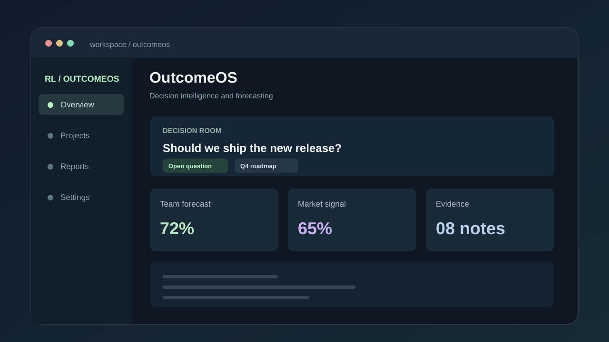
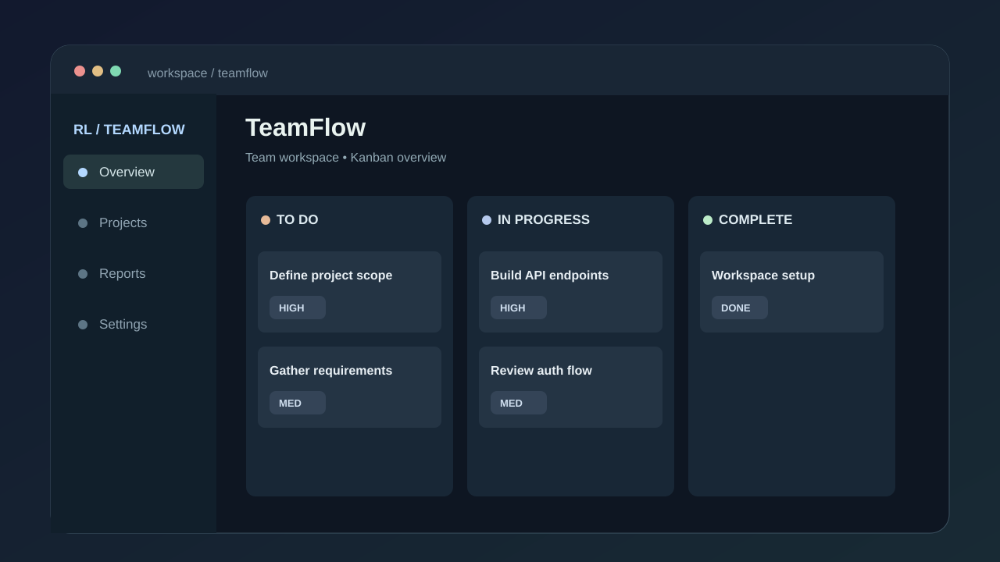
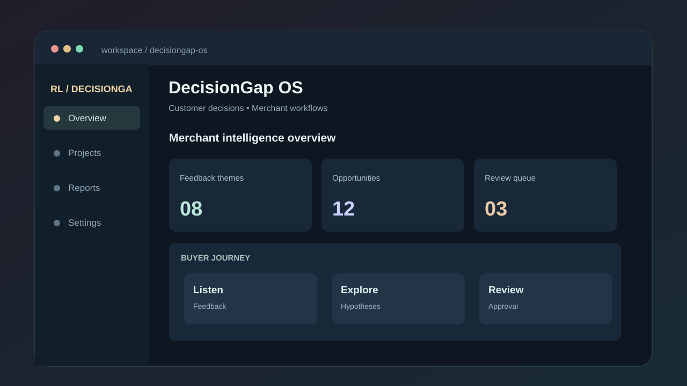
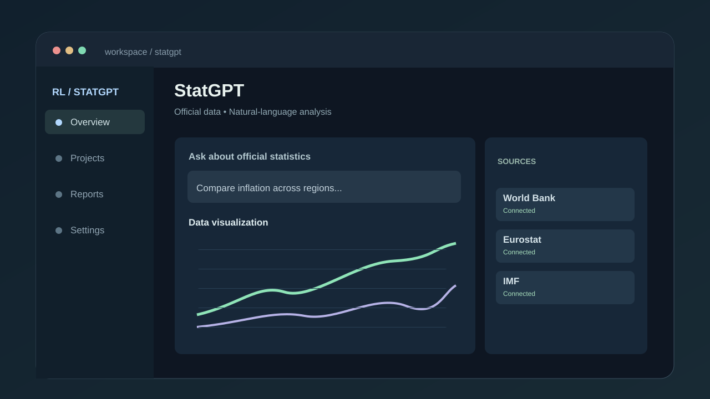
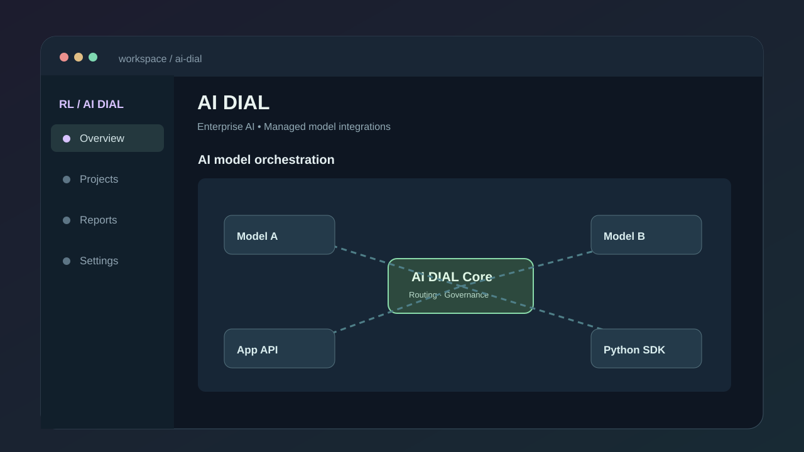

OutcomeOS
Decision-intelligence workspace for making measurable forecasts, organizing evidence and reviewing outcomes through clearer team workflows.
PythonPostgreSQLJavaScriptPanta API
I'm Roman, a developer interested in reliable backend systems, thoughtful AI applications, and tools that turn complex information into useful decisions.
I care about the parts of software that users rarely see but always feel: dependable APIs, sensible data models, clear interfaces, and systems that remain understandable as they grow.
My current interests sit where backend development meets intelligent applications—from team collaboration tools to decision intelligence and natural-language interfaces.
Independent software builds, alongside public industry platforms explored as technical case studies.

Decision-intelligence workspace for making measurable forecasts, organizing evidence and reviewing outcomes through clearer team workflows.

A MERN project management application for organizing workspaces, assigning tasks, tracking progress and reviewing task plans.

Customer decision-intelligence prototype exploring purchasing hesitation, merchant feedback and AI-assisted growth hypotheses.

An EPAM platform enabling natural-language exploration, analysis and visualization of official statistical data using LLMs and SDMX.
Original project by EPAM Systems. Included for technical study; no personal authorship claimed.

An enterprise platform for integrating language models and AI applications through managed APIs, with reusable Python SDK and adapter tooling.
Original project by EPAM Systems. StatGPT uses the AI DIAL ecosystem; no personal authorship claimed.
Images above are custom illustrative previews, not live screenshots. Availability of external sites may change.
Technologies listed in the supplied resume and represented across this portfolio. Proficiency varies by tool.
Python · Node.js · JavaScript · TypeScript · Django · Flask · FastAPI · Express · REST APIs
PostgreSQL · MySQL · MongoDB · Redis · Pandas · NumPy · Scikit-learn · PySpark
LLMs · LangChain · Pydantic · RAG concepts · AI APIs · Data pipelines · Machine learning
React · HTML · CSS · Tailwind · Git · GitHub · GitLab · Docker · Deployment workflows
Igor Sikorsky Kyiv Polytechnic Institute
APEPS Department · Kyiv, Ukraine
APIs, server-side architecture, validation and data access.
Containers, deployment workflows and maintainable services.
Practical integrations, intelligent search and data-informed interfaces.
I'm always interested in discussing thoughtful software, useful AI applications, and opportunities to collaborate.
lotsmanroman781@gmail.com